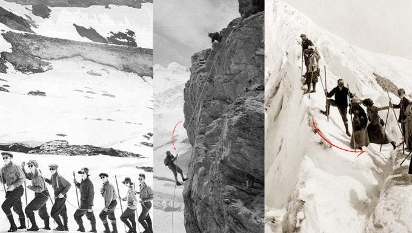

Before the 18th century, mountains were not seen as places for adventure. People feared them. They were considered the home of gods, spirits, and dangerous weather. Climbing was done only out of necessity.
No special gear existed. Climbers wore normal wool clothes and leather boots. Tools were just a wooden walking stick, an ice axe made from a pickaxe, and a hemp rope. No oxygen, no tents, no weather forecast.